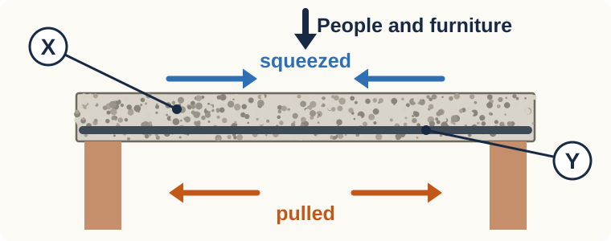

Tiered practice
Year 9 Science · Materials
Original exam-style practice

Everyone. Name the three things mixed to make concrete. [1]
Step 1 · Recognise. Identify X and Y. Is X better at resisting squeezing or pulling? [2]
Step 2 · Explain. Explain why Y helps this slab. [2]
A new composite
Step 3 · Apply. Dried mud keeps the brick’s shape and cracks easily when pulled. Straw fibres resist being pulled apart. Loose straw holds no shape. Identify the two parts of a straw mud brick. Explain what each does. Explain why the brick is better with both. [3]
Check yourself
Answer on your whiteboard. Your teacher shows the answers after your attempt.